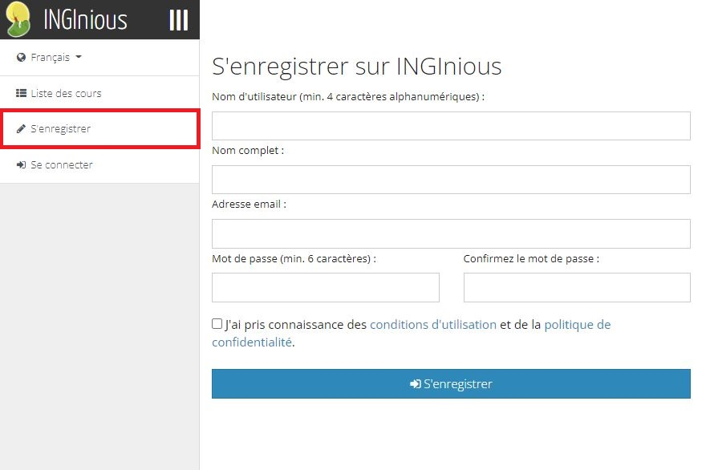

Comment créer une tâche sur INGInious étape par étape¶
Cette partie du tutoriel explique étape par étape comment créer une tâche sur INGInious.
- Vous devez avoir un compte INGInious, pour ce faire, cliquez sur S’enregistrer, vous serez dirigé vers cette page, remplissez le formulaire et cliquez sur S’enregistrer :

- Avec votre compte, vous devez être connecté, vous pouvez le faire en cliquant sur Se connecter puis remplissez le formulaire avec vos informations :
- Vous devez avoir un cours, si vous n’avez pas encore demandé à ce qu’il soit créé pour vous, veuillez contacter cette adresse : contact@inginious.org
- Lorsque vous êtes connecté et que vous avez un cours, vous devez aller sur cette page https://inginious.org/mycourses. Votre cours devrait apparaître ici.
- Cliquez sur le nom du cours, il doit être vide.
- Cliquez sur “Administration du cours”.

- Vous pouvez changer le nom de votre cours ici, lui donner une description et l’accessibilité si vous voulez que les gens voient votre cours. Par défaut, le cours n’est visible et accessible que par vous.
- Cliquez sur “Exercices”.
- Cliquez sur “Ajouter une section” (1) et donnez-lui un nom (2).
- Télécharger les fichiers ici : TODO ajouter un lien vers git
- Dézipper les fichiers.
- Mettez tout dans le dossier de votre cours. Chemin : VotreCours/ici.
- TODO -> Il y aura un accès facile au dossier de votre cours (par webdav), TBD.
- Cliquez sur les trois lignes (3) puis cliquez sur “Ajouter des exercices “(4).

- Donnez un ID à votre nouvelle tâche, sous “Importer du système de fichiers du cours” vous devriez voir un dossier nommé “Maze Tutorial Task”, cliquez dessus, puis cliquez sur “Ajouter”. TODO changer cette ligne en fonction du système qui a été mis à la disposition des enseignants pour accéder au webdav

- Cliquez sur “Enregistrer les modifications”.
- Vous avez créé avec succès une tâche de labyrinthe !